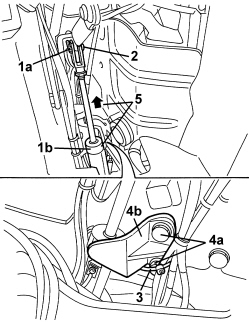
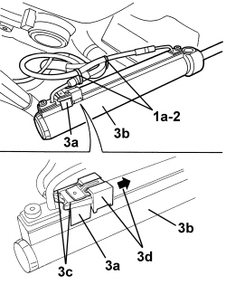
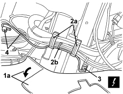

7030H68 HOOD HYDRAULIC ACTUATOR SENSOR - R.R.
- Path
- Procedures > 70 FITTINGS > 7030 SUN ROOF/GLASS PANEL > 7030H AUTOMATICALLY OPERATED HOOD > 7030H68 HOOD HYDRAULIC ACTUATOR SENSOR - R.R.
- Kind
- repair procedure (removal / refitting; the operation number is the code)
- Applies to
- engines: 2.2 JTS, 3.2 JTS; all production periods
- Interactive page
- https://sloeber94.github.io/elrnDB-aBrrSpdr/en/#/946004103
Applies to: engines: 2.2 JTS, 3.2 JTS; all production periods
 Removing
Removing
 Refitting
Refitting1. Using the electric control, place the 5th arc (1a) in the raised position (as illustrated), the hood housing cover (1b) in the fully raised position and the side covers (flaps) (1c) in a lowered position (as illustrated).

Applies to: engines: 2.2 JTS, 3.2 JTS; all production periods
- Discharge the hydraulic system pressure.
Op. 0010T79 HOOD HYDRAULIC SYSTEM - DISCHARGE AND RESTORE PRESSURE
1. Working in the hood housing compartment, disconnect the retainer (1a) for the hood hydraulic actuator (1b).
2. Remove the pin.
3. Cut the wiring retaining band.
4. Undo the bolts (4a) and remove the hydraulic actuator retaining bracket (4b).
5. Raise the hydraulic actuator.

Applies to: engines: 2.2 JTS, 3.2 JTS; all production periods
1. Mark the position of the retaining bands (1a) in relation to the pipes and the wiring (as a reference for refitting).
2.Cut the retaining bands.
3. Disconnect the sensor (3a) from the hydraulic actuator (3b) after having released the tabs (3c) and slide the retainer (3d).

Applies to: engines: 2.2 JTS, 3.2 JTS; all production periods
1. Rotate the hood housing compartment floor covering (1b) retainers (1a), then release them.
2. Remove the trim (1b) releasing the retainers (2b).

Applies to: engines: 2.2 JTS, 3.2 JTS; all production periods
1. Working in the hood housing compartment on the left hand side, raise the side trim (1a) slightly.
2. Open the cable retaining brackets (2a) and cut the band (2b).
3. Disconnect the electrical connection for the sensor.
Description | Component |
|---|---|
HOOD FOLDING SENSOR |
4. Remove the sensor for the hood hydraulic actuator with the wiring.

Applies to: engines: 2.2 JTS, 3.2 JTS; all production periods
Refitting
Removing- Check that the hydraulic actuator sensor is not damaged.
- Position the sensor and wiring.
- Connect the electrical connection for the sensor.
- Close the cable retaining backets and fit the band.
- Lower the side trim and place it in position.
- Position the hood housing compartment floor covering and attach the retainers.
- Connect the sensor to the actuator, then secure it using the retainer; attach the tabs.
- Fit the wiring and pipe retaining bands, ensuring they are in the correct positions marked when dismantling.
- Place the hydraulic actuator in position.
- Position the hydraulic actuator retaining bracket and tighten the bolts.
- Fit the wiring retaining band.
- Fasten the end of the hydraulic actuator using the pin, then fit the retaining clip in place.
- Restore the hydraulic system pressure.
Op. 7030H03 HOOD MANUAL OPENING FOLLOWING DEACTIVATION OF HYDRAULIC SYSTEM - CARRY OUT PROCEDURE
- Carry out several opening/closing cycles of the hood to bleed the hydraulic system.
- Check that the hood is working correctly.
Topics linked from this page (3)
- 0010T79 HOOD HYDRAULIC SYSTEM - DISCHARGE AND RESTORE PRESSURE
- 7030H03 HOOD MANUAL OPENING FOLLOWING DEACTIVATION OF HYDRAULIC SYSTEM - CARRY OUT PROCEDURE
- K200 HOOD FOLDED SENSOR